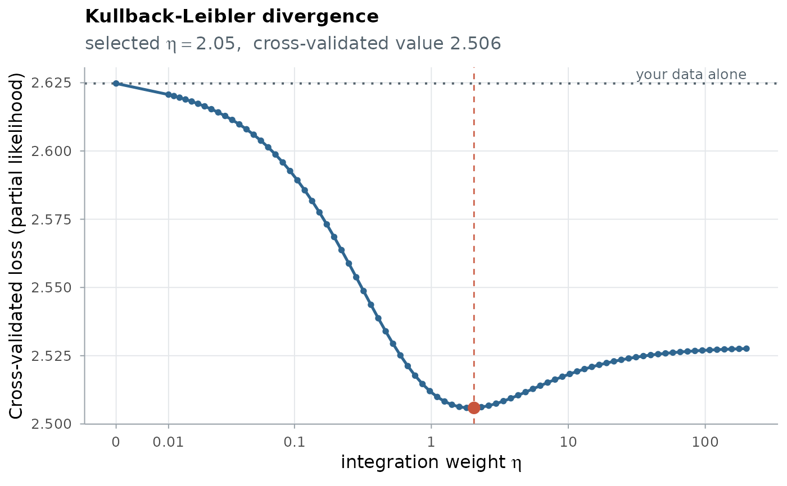
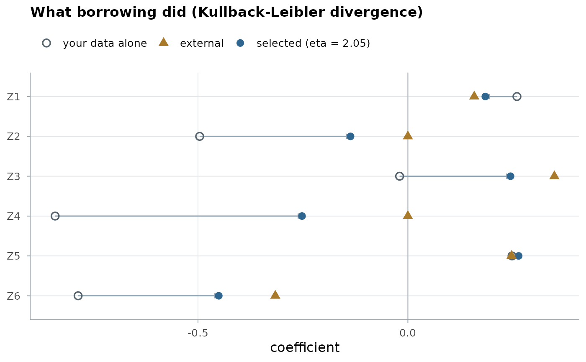
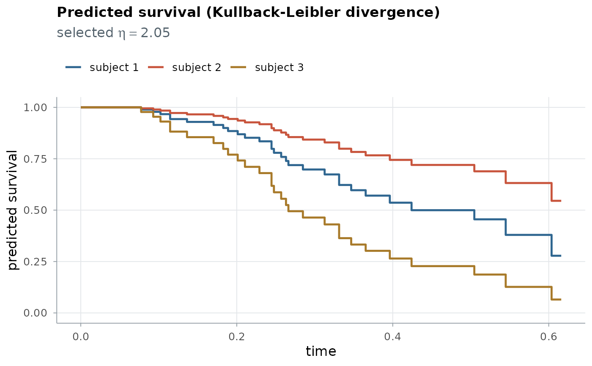

Plot a fitted model: the cross-validation curve, the coefficients, or predicted survival
plot.cv.bregsurv.RdThree views of a cv.bregsurv() fit:
type = "cv": the cross-validated criterion against the integration weight \(\eta\) (each \(\eta\) at its best penalty level under a penalty). The dotted line is your data alone (\(\eta = 0\)) and the red point the selected \(\eta\); a curve that dips below the dotted line means borrowing helped. The \(\eta\) axis is on a pseudo-log scale.type = "coefficients": for each covariate, the coefficient from your data alone, the external coefficient and the selected fit; the arrows show where borrowing moved each coefficient.type = "survival": the predicted survival curves of the subjects innewzunder the selected fit: at the end of each interval for a discrete-time target, overtimesfor a Cox target (with the Breslow baseline hazard of the training data).
Arguments
- x
A
cv.bregsurvfit.- type
"cv","coefficients"or"survival".- reference
For
type = "cv": optional named values to draw as horizontal reference lines, such as the cross-validated loss of the external model used unchanged (seevvh_loss_fixed()). The names label the lines.- covariates
For
type = "coefficients": the covariates to show.NULLshows all of them, or, with more than 25, the 25 with the largest coefficients.- newz, stratum
For
type = "survival": the covariates of the subjects to draw (a few rows, with the target's column names) and, for a stratified target, their strata.- times
For
type = "survival"on a Cox target: the time grid;NULLspans the training follow-up.- labels
For
type = "survival": names of the subjects;NULLuses the row names ofnewzor "subject 1", "subject 2", ...- ...
Unused.
Examples
data(ExampleData_lowdim)
tr <- ExampleData_lowdim$train
fit <- cv.bregsurv(target_cox(tr$time, tr$status, tr$z),
release_coef(ExampleData_lowdim$beta_external_fair), divergence = "kl")
plot(fit)

plot(fit, type = "coefficients")

plot(fit, type = "survival", newz = ExampleData_lowdim$test$z[1:3, ])
